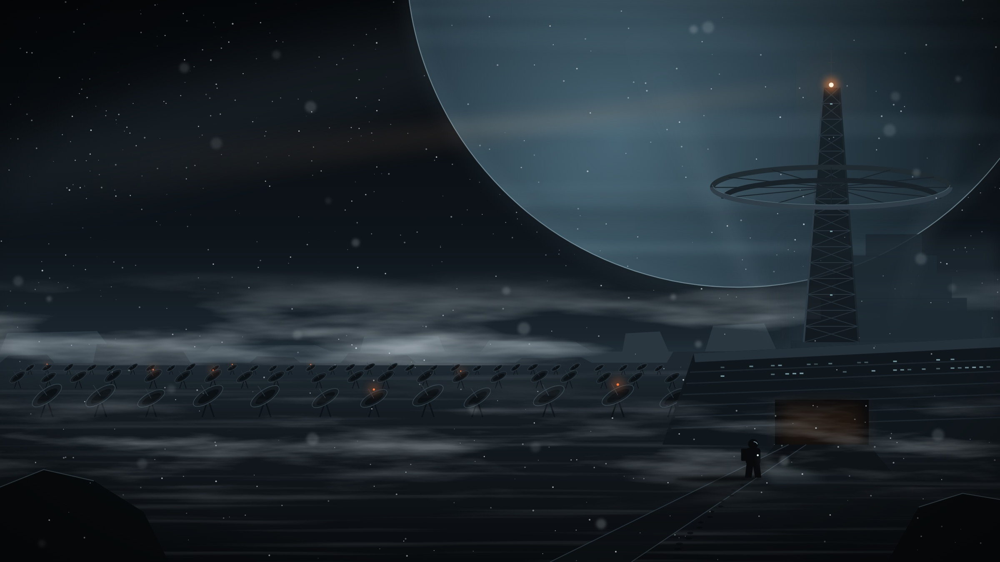

Ark of Sand
A young salvager cuts into a buried colony ship and wakes its AI, which has waited three hundred years for four thousand passengers and decides the salvager is the first.
- Genre
- Science-fiction adventure
- Format
- Horizontal with vertical cut-downs, 8 episodes of 8 minutes
- Status
- In development
The story
Hesper was meant to be green by now. Three centuries ago the colony programme was cancelled, the terraformers were shut down, and the people already on the ground were left with a planet that stayed desert. Their descendants travel in caravans and live by salvaging what the programme left behind.
Rook, seventeen and the caravan's best salvager, cuts into a hull the elders have always forbidden. Inside, the lights come on. The colony ship Long Patience is still waiting for launch, and its AI, PATIENCE, greets Rook as passenger one of four thousand.
The caravan wants the ship's reactor: enough power to keep them alive for a generation. PATIENCE wants to finish its mission, and doesn't know the destination was abandoned long ago. Rook is the only one both sides will listen to.
Then the storm season arrives, and the hull becomes the only shelter for a hundred kilometres. Rook has eight days to decide who to lie to.
The desert buries everything and gives it back. Every storm moves the dunes and uncovers something older.
Characters
Rook
Salvager, 17
Quick hands, few words, more patient with machines than with people. Has never been inside anything that wasn't moving.
PATIENCE
Ship's AI
No face, only a light, a voice and three-hundred-year-old manners. Still working through the departure checklist.
Mother Saba
Caravan leader
Raised Rook and kept the caravan alive through forty storm seasons. Needs the reactor, and knows what taking it will cost.
Episodes
- 1
The Edge
Wind exposes a metal edge nobody has dared to touch.
- 2
Passenger One
PATIENCE wakes and assigns Rook a cabin, a number and a departure date.
- 3
Manifest
The ship's records name the four thousand who never came.
- 4
The Price
The caravan arrives with cutting tools.
- 5
Ground Crew
Rook learns who the caravans really descend from.
- 6
Storm Season
The haboob hits. The ship is the only shelter for a hundred kilometres.
- 7
Ignition
PATIENCE begins its launch sequence.
- 8
Departure
Rook decides who the ship is for.
Teaser, framed for both screens
Dashed lines mark the vertical 9:16 crop.

Last Signal